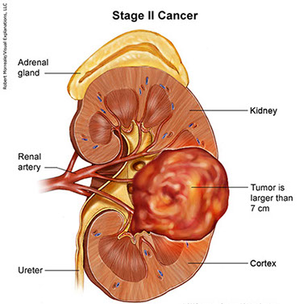
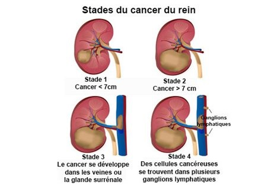
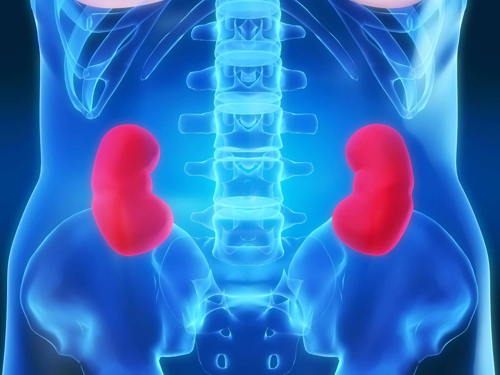

Le Cancer Du Reine.
Description
La découverte d'une tumeur du rein est une situation relativement fréquente. Dans 70 à 80 % des cas, les tumeurs du rein sont découvertes de façon fortuite (tumeur incidentale) par des examens d'imagerie abdominale (échographie, scanner ou IRM) demandés pour une autre raison . Les tumeurs du rein peuvent aussi être révélées par des symptômes locaux (hématurie macroscopique, lombalgie) ou généraux (altération de l'état général) qui témoignent souvent d'une maladie localement avancée ou métastatique. La majorité des tumeurs du r ein sont malignes mais un certain nombre d'entre elles sont bénignes (notamment les petites tumeurs) ou ont un faible potentiel évolutif.
La plupart des tumeurs du rein ont un aspect solide (tissulaire) à l'imagerie. D'autres, moins fréquentes, se présente nt sous une forme kystique. La démarche diagnostique n'est pas identique dans ces deux situations.
Causes.
Les facteurs de risque de cancer du rein sont :
le tabac
l'obésité
le sexe masculin
l'hypertension artérielle
l'insuffisance rénale
la transplantation rénale
l'exposition envi ronnementale (trichloréthylène)
les prédispositions génétiques dont des formes familiales (la principale est la maladie de Von Hippel Lindau).
  